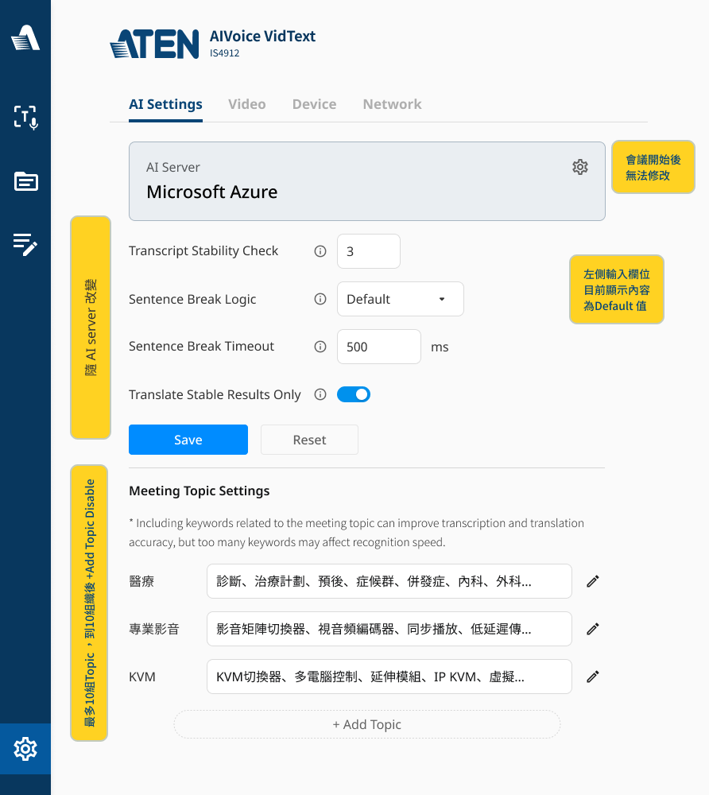
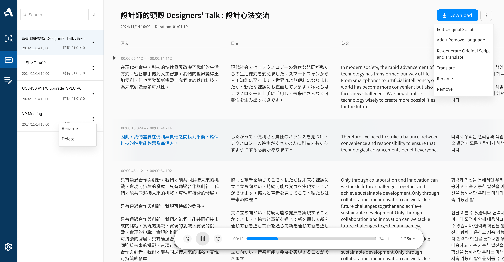
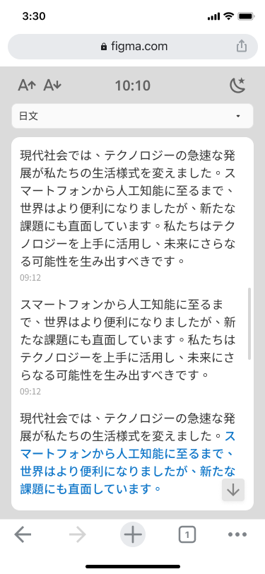
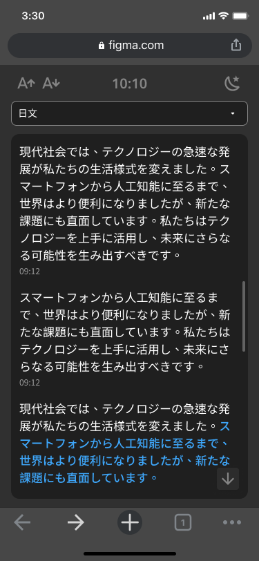
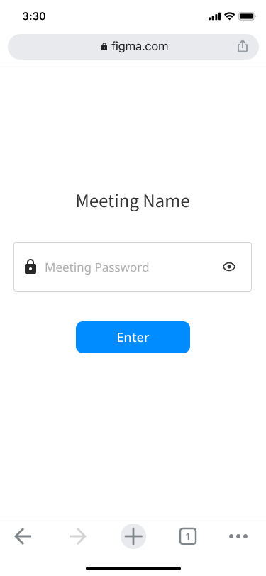
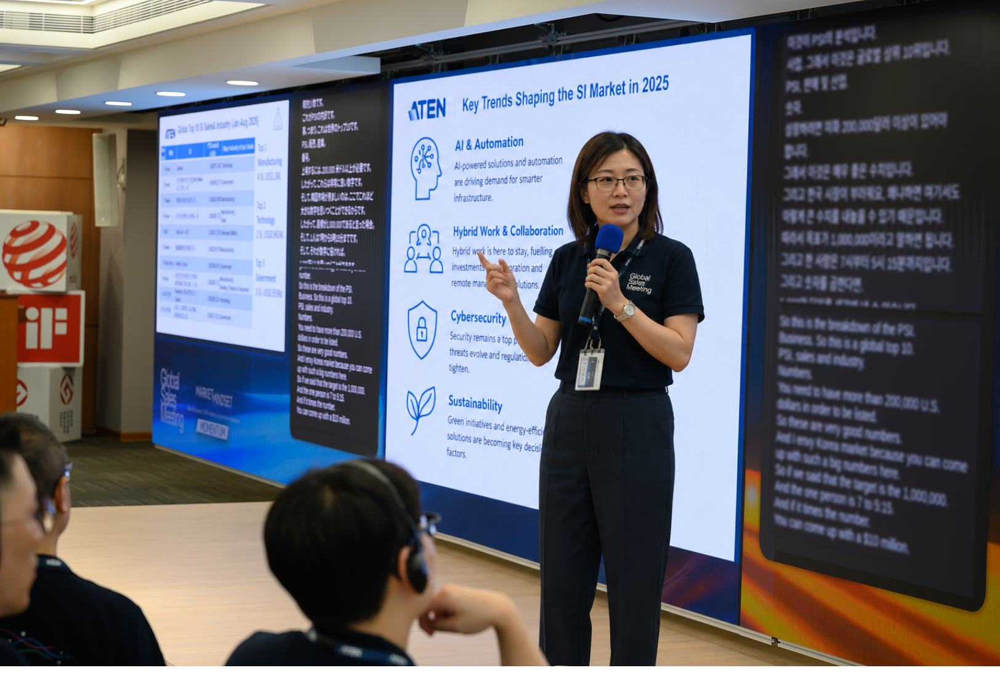
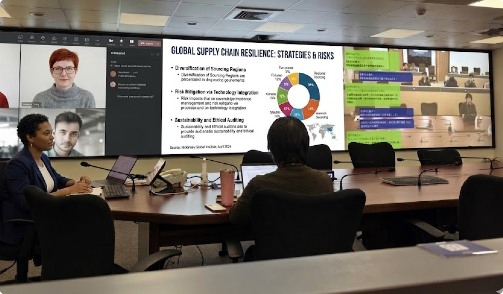
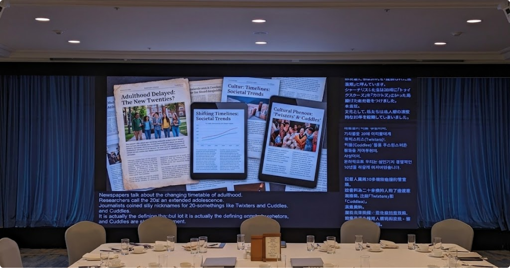

AI Meeting Edge
把「即時翻譯 +
會議紀錄」做成一台能融入會議室的邊緣運算裝置
ATEN｜已上線產品
當會議翻譯與紀錄都能交給雲端 SaaS，
為什麼還要做一台裝置？
AI Meeting Edge 把會議的即時字幕翻譯與會議紀錄，整合進一台能接入場域的裝置：語音轉錄與翻譯直接串接微軟 STT 服務（含翻譯），裝置負責影音接入、雙語字幕疊加輸出與會議記錄／總結。 它不正面搶純軟體市場，而是讓系統整合商（SI）把 AI 無痛導入既有場域——並與 ATEN 長年經營的環控、專案影音設備整合成一套一鍵化的場域服務。
我的角色
競品研究、PRD／規格定義、UI 設計（全程主導）
本篇聚焦我投入最深的兩塊：把模糊需求收斂成可開發的「規格」，以及讓人能操作的「介面」。
專案屬性
B2B 軟硬整合產品 · 會議 AI · 產品規格 · UI/UX
（實機照或 UI 主畫面 →
image/meetup/hero.png）
讓既有場域「無痛導入 AI 能力」。本產品是給系統整合商（SI）一台多功能、可自由設定的裝置——依場域需求一鍵導入專屬的 AI 服務，並與 ATEN 長年經營的環控系統、專案影音設備串成一體。
跨語言會議的痛點，不只是「翻得準」
跨語言會議要同時解決兩件事：當下聽得懂（即時翻譯字幕），以及會後留得下（逐字稿與總結）。 市面上已有不少擴充功能與雲端 SaaS 在做，但放到企業會議室的真實場域，會遇到幾個結構性問題。
機密會議資料該交給誰
AI 轉錄與翻譯一定得經過雲端——問題不在「要不要上雲」，而在「上誰的雲」：把可能含機密的會議內容交給一家陌生第三方 SaaS，才是多數企業的合規與信任門檻。
和現有會議室硬體接不起來
研討會與活動現場早有導播、ProAV、音訊系統；一個「電腦 + SaaS」的方案，難以乾淨地接進既有訊號流。
場域差異大，一套軟體吃不下
小型會議、中大型研討會、活動導播，對畫面與字幕輸出的需求完全不同，難用單一軟體通包。
切角：不是再做一個更聰明的 SaaS，而是把 AI 能力放進「裝置」—— 讓 ATEN 既有的會議室／AV 解決方案，直接升級出 AI 翻譯與會議紀錄。
先看清楚對手，再決定要不要正面打
我把競品分成兩類盤點：純軟體（瀏覽器擴充／雲端 SaaS），以及有搭配硬體的方案。
關鍵觀察
軟體新創在新功能與 UI 介面上迭代非常快；ATEN 若用「一台電腦搭配總結 SaaS」的形態正面對決，直接競爭相對弱勢。
定位：不打功能戰，打「整合進既有 AV 體系」的場域戰
定位：不打 AI 功能戰，打「讓場域無痛具備 AI 能力」的整合戰——讓系統整合商（SI）用一台可自由設定的裝置，一鍵導入專屬該場域的 AI 服務，並與 ATEN 既有的環控、專案影音設備串成一體。資源壓在中大型場域；SOHO／純軟體場景容易被 SaaS 取代，不主打。
模糊需求，收斂成可開發的規格
定位確定後，下一步是把「想做的事」翻成工程能接的規格：誰用、在什麼情境用、每個情境的畫面與聲音從哪進、字幕從哪出。 這是我在這個專案投入最深的一塊。
TA 與使用情境
中大型研討會
翻譯與會議紀錄系統；需與現場導播、ProAV、音訊系統整合。
小型會議 （後續排除）
PRD 初期列入，但情境盤點後判定不合理——更適合純翻譯／總結 SaaS，已刻意排除（見 04）。
活動公關公司
可融入既有導播體系；需要可去背／單色畫面，能搭配 OBS 等程式。
情境所需功能：輸入到輸出，硬體上要對得起來
中大型研討會（多語言字幕與畫面融合輸出）
Remote Meeting → UVC-out 出「畫面 + 字幕」給遠端、HDMI-out 出控制畫面給主持人；
Hybrid Meeting → HDMI-out to ProAV 出「畫面 + 字幕」（遠端 + 現場），另出控制畫面給主持人。
小型會議（使用流程）
開始會議 → 輸入會議設定 → 錄音並顯示雙語字幕 → 會議結束 → 總結 + 輸出會議記錄，並為重點／代辦事項下 Tag；記錄可存電腦、自動郵寄。
活動 / 導播
輸出可去背或單色畫面，融入既有導播流程、可搭配 OBS。（提醒：過於偏軟體，反而容易被 SaaS 拿來比較。）
硬體功能（裝置層）
+ Noise gate / Denoise / Filter → AI 運算裝置 → Video output
畫面 + 字幕 Control
規格刻意做得「多功能、可自由設定」——但目的不是堆功能給使用者，而是讓系統整合商（SI）依不同場域自由組合、一鍵導入。關鍵是把「每個情境的輸入訊源 → AI 處理 → 字幕／畫面輸出」在硬體介面上對齊，SI 才接得上既有的環控與影音系統。
盤點情境：哪些是裝置的主場，哪些該交給軟體
把情境一張張畫出來，不只是展示功能，而是逐一判斷「這個場景，這台裝置到底是不是對的工具」。 結論是：研討會與活動是主場，個人／小型會議則該讓給軟體。
研討會：裝置的主場
中大型研討會與活動現場早有導播與音訊系統，需求是把簡報畫面與多國語字幕乾淨地融合輸出—— 這正是 AI Box 接進既有訊號流的價值所在。
中大型研討會：簡報（Source）經 AI Box 疊加字幕後輸出到大螢幕；聲音另由 Mixer 經 UAC-in 進入——中大型場域常分開收音，影像與聲音要分開考量。

大型研討會 01
多螢幕，放大講者頭像

大型研討會 02
僅播放字幕、多國語言

主持人翻譯字幕
僅播放字幕
個人／小型會議：評估後刻意排除
小型會議在 PRD 初期也被列為 TA，但把情境攤開後，我判斷它是個不合理情境： 兩三人的小會議用不上裝置的軟硬整合，反而是一台電腦配翻譯／總結 SaaS 更輕、更合適。

✗ 用 AI 邊緣運算裝置
把 AI Box 搬進兩人小會議，殺雞用牛刀，硬體整合優勢用不上（圖中紅問號即此意）

✓ 用語音翻譯 SaaS
一台筆電配 SaaS 就搞定，對小型會議更合適
規格判斷：能列出情境不難，難的是誠實判斷「哪些情境不該做」。 把小型會議讓給軟體、資源集中在裝置真正有優勢的研討會／導播場域——這也呼應競品分析：純軟體新創在個人／小型場景迭代更快，ATEN 不該在那裡正面對決。
兩條主流程
Use Case A：有主講者研討會
準備 → 開新會議 → 工作人員測試（收音 / 畫面 / 翻譯）→ 等觀眾入場 → 開始
・為現場與遠端觀眾翻譯字幕（遠端更適合搭 Teams）
・單一 / 多講者 → 能否用不同麥克風辨別講者？
・QA：觀眾需持麥克風才能收音、翻譯其發言
・結束 → 產生逐字稿與翻譯；字幕與現場（或導播）畫面合併為全程字幕影片；依重點 Tag 剪出精華
Use Case B：一般會議
進會議室 → 開新會議（可從行事曆 RBS 或上次會議帶入資訊）→ 人員到齊 → 開始
・帶出待討論事項、前次摘要與代辦 Check
・產生翻譯與字幕，可暫停 / 重開
・討論型態：單一報告 / 多人討論 / 多組同時發言
・結束 → 檢視修正逐字稿、產出總結 / 重點 / 代辦；輸出帶字幕影音；寄送指定成員或資料夾（並考量紀錄的保存安全性）
其他情境考量（規格決策依據）
・導播畫面：要提供能進導播機的乾淨畫面——綠幕 / 乾淨背景 / 正確的 I/O。
・遠端：遠端 Teams 已有字幕功能、且可讓不同用戶開不同語言——這塊不硬做，交給既有工具。
把規格落地成一整套「網頁後台」
整個 web 介面是一套網頁後台，服務三端：後台（系統整合商與操作者）、OSD 螢幕輸出（現場大畫面）、手機（與會者個人裝置）。設計核心是一句話——把「客製」留給 SI、把「使用」變成一鍵。
一、網頁後台（控制端）





二、OSD 螢幕輸出（輸出端）
輸出端是疊在現場大畫面上的 OSD，可純用前面板按鍵操作、不必碰電腦。除了字幕，畫面上還能顯示一張 QR Code——與會者掃碼就能在自己手機看翻譯。

三、手機（與會者端）
掃碼後進入的手機畫面，是行動端輸出 UI：與會者用自己的裝置選想看的語言、看即時字幕，不必擠著看大螢幕；提供字級調整與深色模式，必要時以密碼保護存取。



介面如何反映架構
展場實機 Demo
於 ATEN 展場以實機演示即時翻譯字幕與會議紀錄流程。



從競品到規格，再到介面的取捨
規格的價值在「收斂」，不在「列功能」
難的不是想得到功能，而是把不同場域的輸入到輸出在硬體上對齊、決定哪些不做（如 SOHO、遠端字幕交給 Teams）。
軟硬整合是定位、也是限制
選擇「裝置」而非 SaaS，換到的是與 ProAV / 導播體系整合的護城河；代價是迭代速度不如純軟體新創，必須靠場域整合取勝。
誠實面對待加強處
翻譯精準度仍有侷限（即時轉錄與斷句會影響翻譯品質）、且仍需連雲（無完全離線／地端方案）——這些在規格階段就標記為已知限制，而非假裝沒有。
※ 本專案為 ATEN 團隊產品，我主導競品研究、PRD／規格與 UI；系統硬體架構非我負責，故未列入。